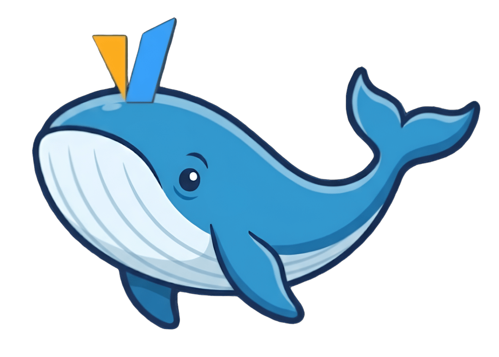
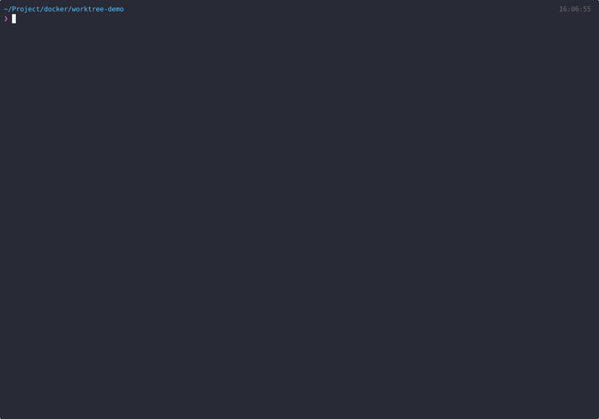

open source · free · GPU-native
The simplest way
to serve vLLM.
Save per-model settings as profiles.
Pick one in the TUI and hit Enter to spin it up or down.
the problem
Every ML engineer hits these walls
01
Config chaos
Different models need different GPU settings, memory limits, and serving params. You end up copy-pasting docker commands every time.
$ docker run --gpus ... -e ... vllm/vllm ...02
Switching models is painful
Testing Qwen, then Llama, then DeepSeek? Each switch means stopping, reconfiguring, and restarting manually.
$ docker stop && docker rm && docker run ...03
No visibility
Which container is running? How much GPU memory is left? You're constantly running docker ps and nvidia-smi.
$ docker ps && nvidia-smi04
Multi-model headaches
Running multiple models simultaneously means juggling ports, GPU assignments, and compose files by hand.
$ vim docker-compose.yaml # again...how it works
Three steps. That's it.
Clone & configure
Set your HuggingFace token and cache path. One-time setup.
Launch the TUI
Quick Setup auto-generates a profile from just a model name. Or create one manually with full control.
Select & deploy
Pick a profile, press Enter, choose Start. Your model is serving on the OpenAI-compatible API.
demo
See it in action

terminal
Quick Start in your terminal
before & after
From config hell to one-click deploy
manual workflow
with vllm compose
features
Everything you need, nothing you don't
Interactive TUI
Start, stop, view logs, edit configs — all from one terminal screen with keyboard shortcuts.
Model Profiles
Save per-model settings independently. Switch between Qwen, Llama, DeepSeek instantly.
GPU Monitor
Real-time GPU usage bars on the dashboard. Auto-refresh every 5 seconds. No more nvidia-smi.
Memory Estimator
Estimate GPU memory before deploying. Know if your model fits before wasting time on OOM errors.
Source Build
Auto-detect GPU architecture. Fast Build in 10-30 min with a TUI-driven dev image workflow.
LoRA Adapters
Multi-adapter loading with automatic path mapping. Serve fine-tuned models alongside base models.
faq
Common questions
.env.common, and run uv run vllm-compose.
Quick Setup auto-generates a profile from just a model name — you'll be serving in 30 seconds.
uv for Python package management but pip works too.